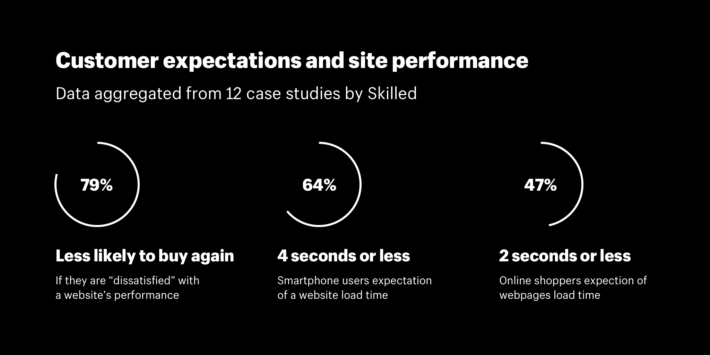
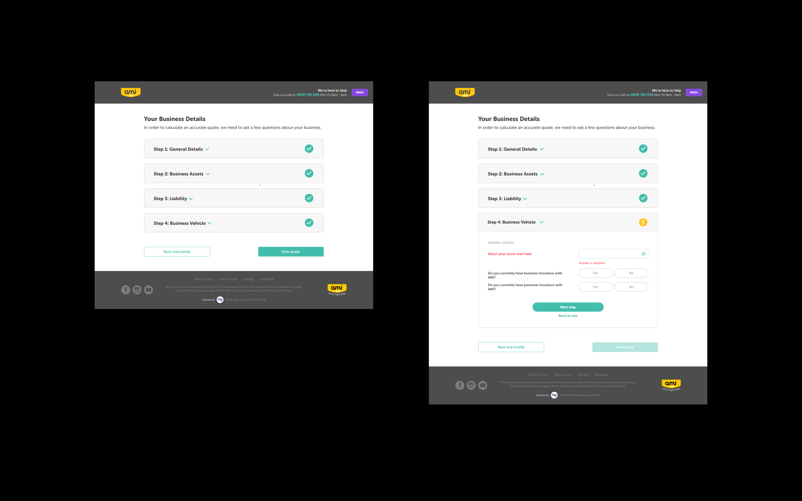
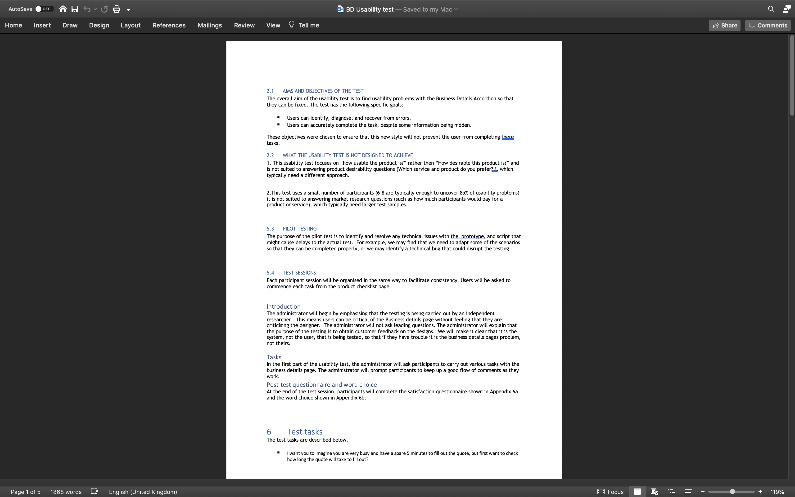

The Challenge
Contracted to AMI to help progress the user expereince for a customer looking for a quote to cover thier business. The challenge was to help develope a better user expereince with a focus on "quick wins" and provide evidence to gain buy-in from stakeholders.
The process
- Animation
- UX design
- High fidelity code prototypes
- User testing
Increasing conversion
The page load times with AMI business insurance portal could be upto 7s long. This problem was impacting the conversion rate, but refactoring the software architecture to increase performance would be an expensive scope of work.
Disguising slow loading times
The original pre-loader animation had no indication when it would be completed. To provide a quick fix I looked into a range of pre-loader animations including determinate pre-loaders, and skeleton pre-loaders. I gathered data to support this UX decisions and get stakeholder buy-in, then designed a new animation.
Intimidating insurance forms
There can be over 30 questions to answer to get a quote to insure
your business. With no ability to remove questions, and a focus on
“quick wins” the challenge was to create a more pleasing
experience without redesigning the entire layout.
We created an accordion layout that awarded users with “ticks” as
they progressed.
Exploring the accordions could cause errors
If a user opens the accordions to explore, then closes the accordion without touching a question the system would recognise it as incomplete and return red errors for each question untouched. The challenge was to align the system behaviour with customers explorative mindset vs task-based mindset.
Usability testing for system behaviour
To align the system behaviour with customers explorative mindset
vs task-based mindset, we had to understand if there were any
events or clicks we could track, as a user moves from exploring to
completing the task.
To facilitate this usability testing I created a code based
prototype with FramerX and programmed error states into the
prototype. We then ran a number of participants through the a
range of tasks to understand their behaviour during an explorative
mindset vs task based. This test proved positive with a number of
changes to the systems error handling.

Usability test goals
previous project
Safety for surfers
next project
The Kerry Topp Collective